MotaMeet — meet people who share your interests. (2016)
MotaMeet connects people so they can talk about common interests, activities, business or hobbies through a simple chat. I designed the experience from first sketches to the final interface.
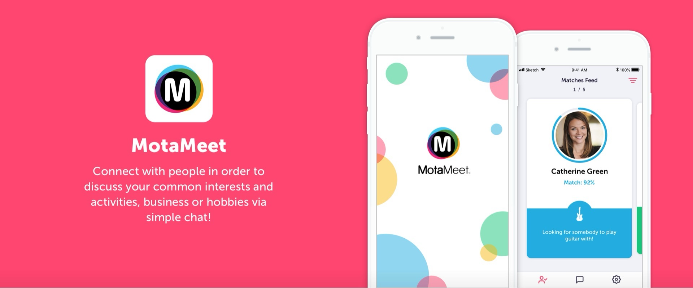
User experience
MotaMeet connects people based on their interests, so the main goal was to get them into a conversation as simply and quickly as possible.
Filters and swiping through matches give access to other people’s profiles, one click away from a first conversation with someone who shares an interest.
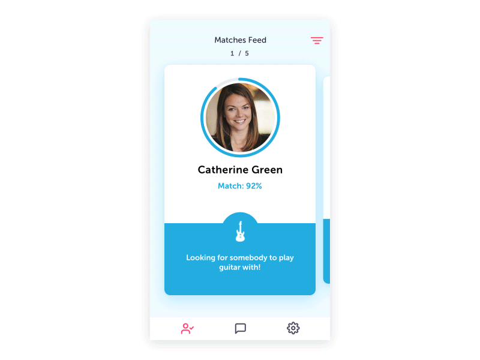
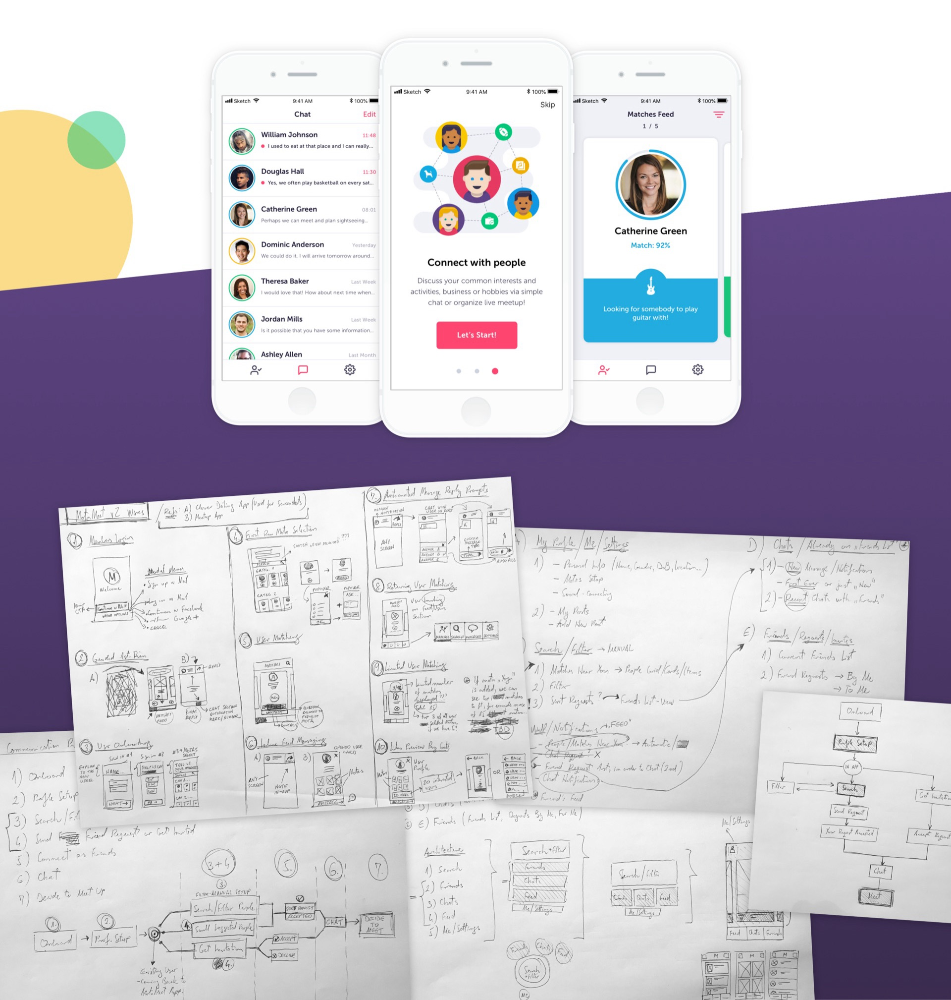
User flow
The flow shows how people reach the goal from the moment they open the app. It was important to explain how the app works before an account is created. From there it’s straightforward: find your best matches and contact them, or get found and reply.
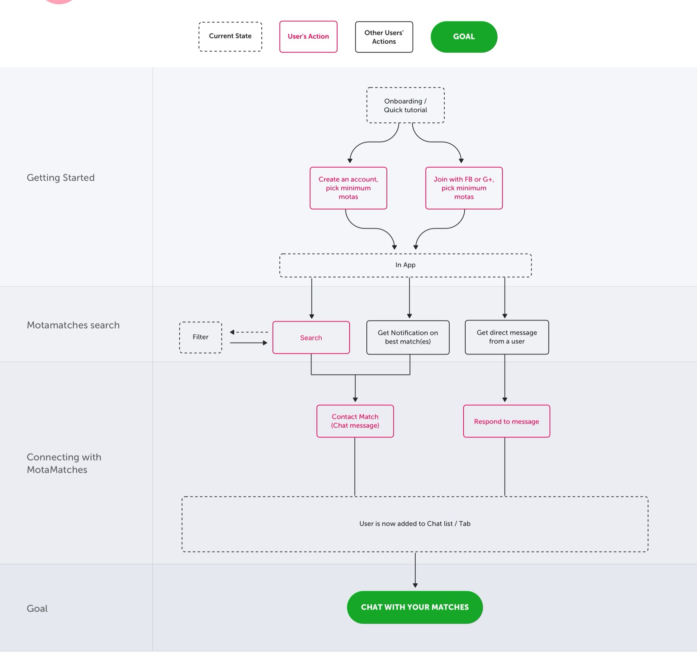
MVP sitemap
The app has three main sections — Matches, Chat and My profile — in the tab bar, so people can jump between them quickly, always know where they are and feel in control of what they do next.
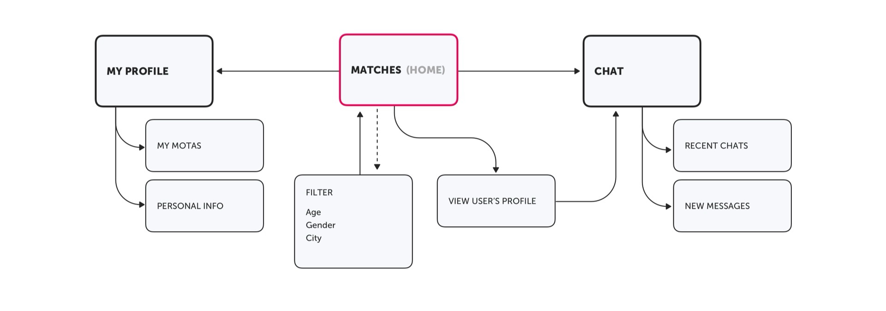
Wireframes
Every flow was drawn and connected into a wireframe prototype to find gaps and improve the experience. Each screen shows the relevant information — interests, personal details, photo, actions — with clear next steps.
Testing the prototype back and forth pointed out the improvements needed to make the best product possible.
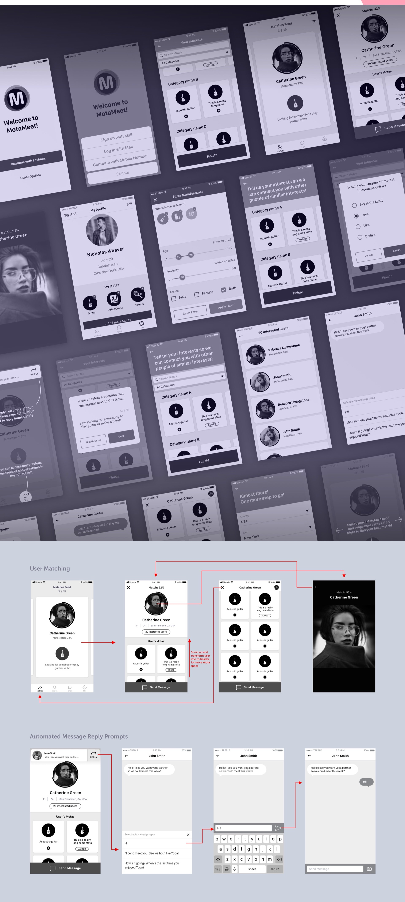
Design elements
Vibrant primary and secondary colours give the product a delightful, uplifting and dynamic feel. Because the focus is on colourful motas — people’s interests — the layout stays clean, with accents only on actions and navigation.
A simplified, stylised layout preview was used to explore colour balance and style direction.
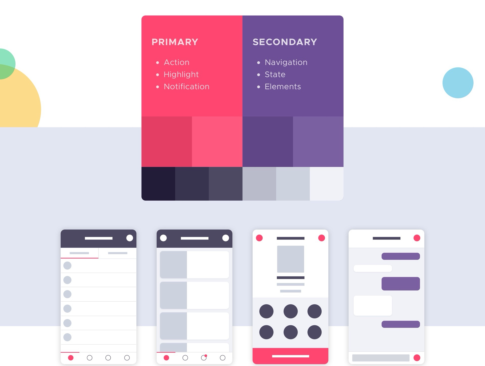
Typography
A clean sans typeface, Museo Sans, keeps the layout calm. Each screen already carries plenty of detail — icons, buttons, photos and mota pictograms — so the type avoids adding clutter.
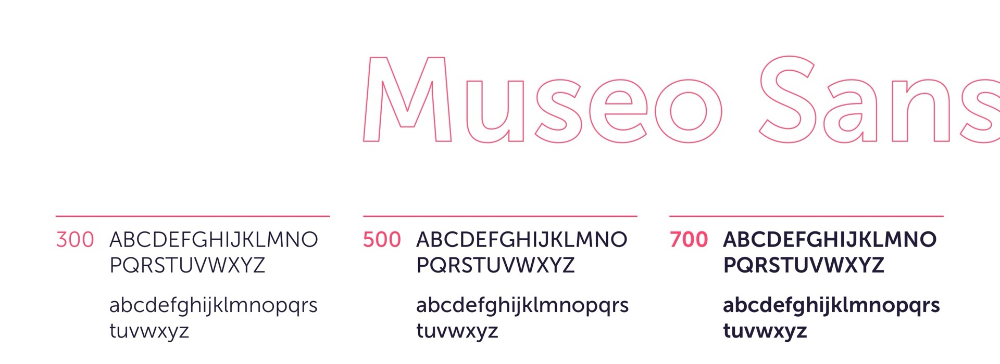
Icons
Iconography follows the simplicity of the product. A stroked style with accent colours on actions sets these icons apart from mota icons.
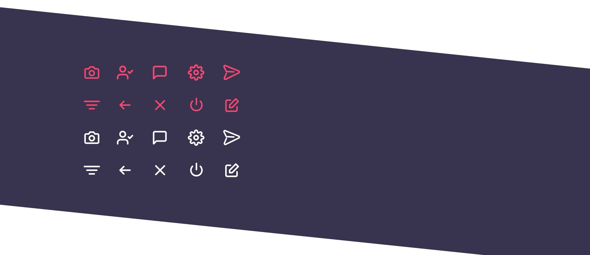
Illustrations
Colourful, cartoon-style illustrations add some fun to onboarding. Key steps explaining how the app works come with short copy, helping people understand the main features and keep going.
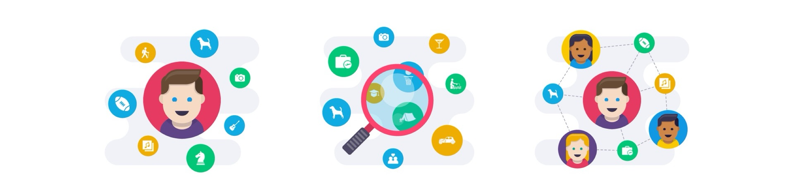
User interface design
The UI follows the design elements closely. A flat, clean look lets coloured mota circles and accented actions take over.
Beyond navigation, the focus is on each person — the match — and their motas.
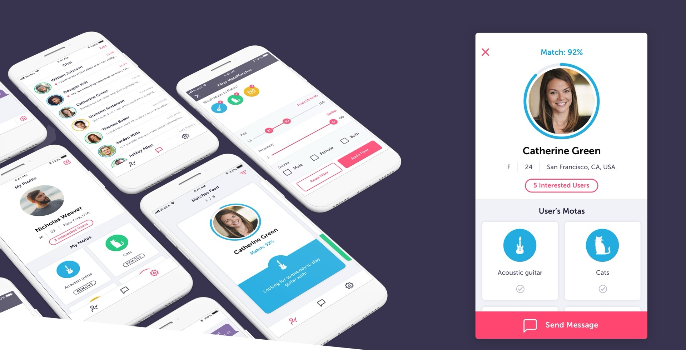
Interaction & animation
Animations and transitions add delight and improve the experience. Each movement on screen helps people understand what’s happening, whether it’s an icon, a field expanding or a card opening.
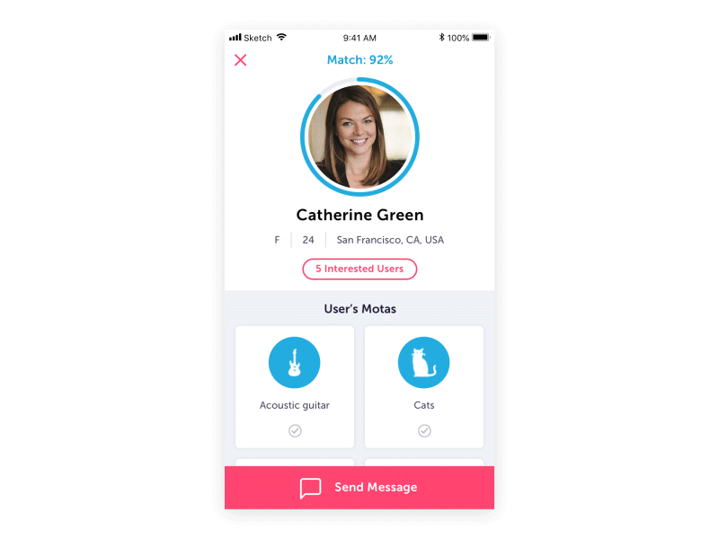
User testing
Getting feedback and iterating. The product was tested on UserTesting.com to find gaps in the process and see how people find their way around the app.
A specific set of tasks and questions brought valuable feedback, which was used to iterate on the product and improve the experience.
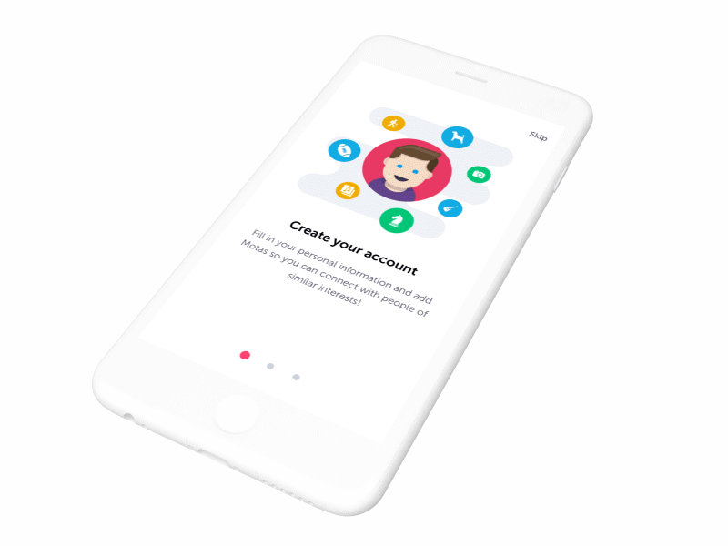
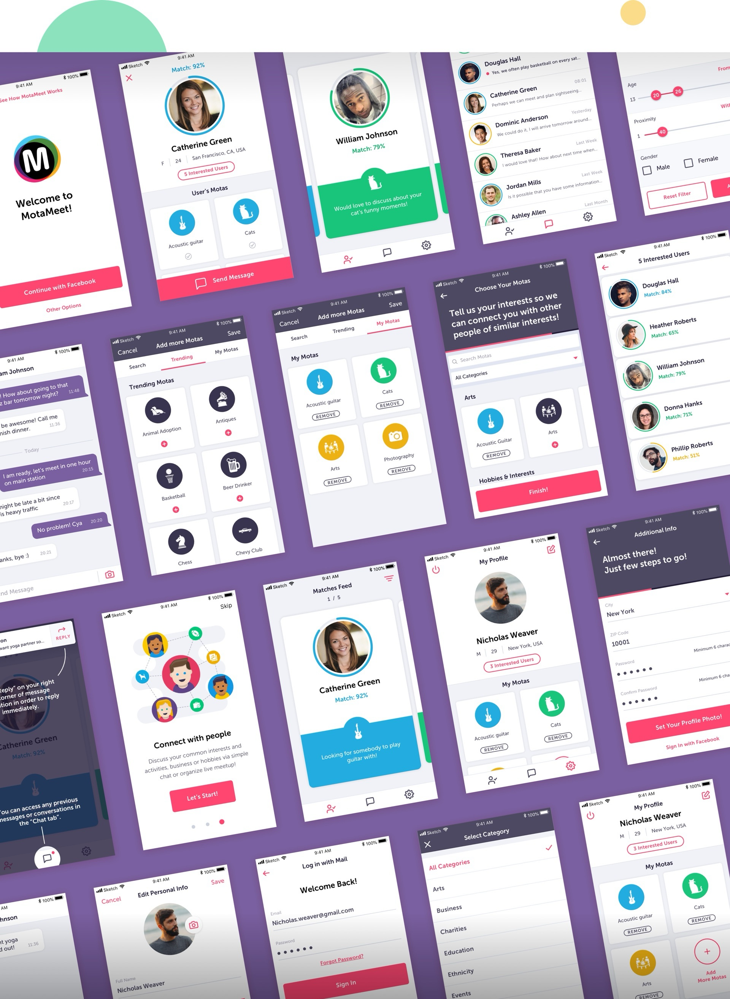